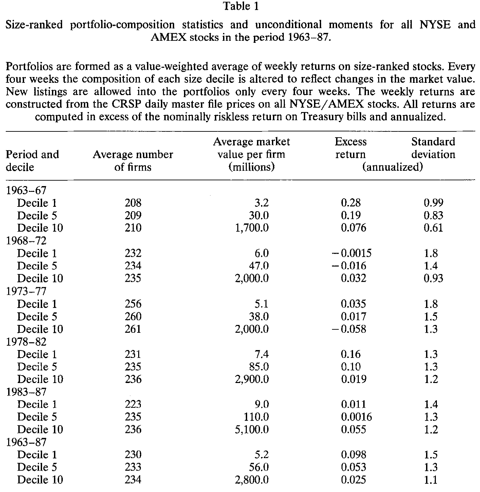
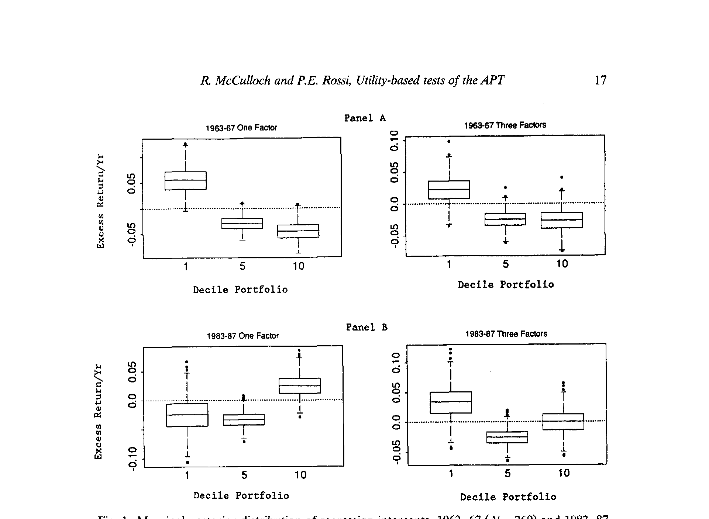
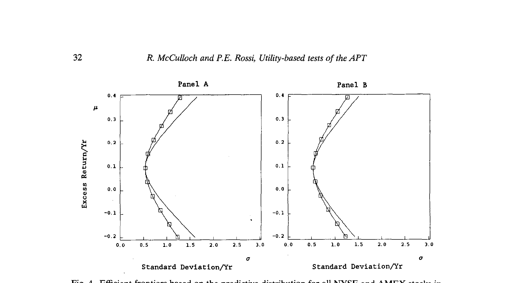
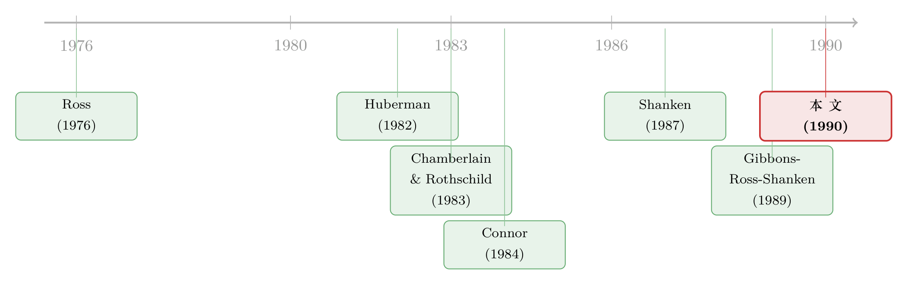

「不能拒绝」就等于「支持」吗？——给套利定价理论换一把尺子
本文读的是 McCulloch and Rossi (1990, Journal of Financial Economics)：作者跳出「显著还是不显著」的传统检验，改用一套基于投资者效用的「确定性等价」度量，从后验与预测两个角度审视套利定价理论。结论是个意味深长的反转——经济意义上，对模型的偏离大得惊人；可参数不确定性同样大得惊人，以至于既不能确认、也不能否定 APT。这与那些「无法拒绝、于是视作支持」的传统检验，结论南辕北辙。
1 一桩被「不显著」蒙混过去的公案
先讲一个我们都太熟悉、却很少有人较真的逻辑。
某篇论文检验一个资产定价模型，跑出一个 likelihood-ratio 统计量，p 值大于 0.05，作者写下一句「无法拒绝原假设」，于是读者心领神会：模型成立。套利定价理论 (arbitrage pricing theory, APT) 的实证史上，这样的「无法拒绝」反复出现，并常常被解读成对理论的支持。
但这里藏着一个被忽略的裂缝：「无法拒绝」可以有两个完全不同的来源。一种是模型真的对，数据老老实实地贴着理论的约束；另一种是——数据太吵、样本里关于这个参数的信息太少，于是无论真相如何，你都拒绝不了。前者是证据，后者只是无知。传统的显著性检验，把这两件事搅在了一起。
McCulloch 和 Rossi 这篇 1990 年的 JFE，正是冲着这道裂缝去的。他们想问的不是「偏离 APT 在统计上显不显著」，而是一个更朴素、也更难回答的问题：
如果 APT 真的被违反了，一个真金白银做投资的人，会因此损失多少效用？
换句话说，他们要把检验的标尺，从「统计显著性」换成「经济显著性」。这一换，整个故事就翻了过来。
2 APT 的统计化身：一个没有截距的回归
要谈检验，先得把理论压成一个可以估计的统计模型。
APT 的内核（Ross, 1976；Huberman, 1982）是：资产收益由少数几个共同因子驱动，无套利使得期望收益近似线性于因子载荷矩阵 B。作者用的是 Connor (1984) 的竞争均衡版本——在一个无穷维经济里，每个投资者都能把异质风险分散掉，于是「近似线性」收紧为「精确线性」。
把收益生成过程写下来，资产收益是因子的线性函数：
$$ r_t = B f_t + \varepsilon_t, \qquad E[\varepsilon_t \mid f_t] = 0,\;\; E[f_t]=0,\;\; E[\varepsilon_t \varepsilon_t'] = V . $$
竞争均衡的 APT 进一步要求期望（超额）收益线性于 B。把超额收益记下来，并吸收掉随时间变化的风险溢价 \(\gamma_t\)，可以整理成：
$$ r_t - r_{ft}\,\iota = B(\gamma_t + f_t) + \varepsilon_t . $$
当因子 F 已知（数目、构成、溢价都给定）时，这就是一个没有截距的多元回归。但真正要检验的，是给收益加上一个截距之后，它到底等不等于零。对十个规模分组（decile）的超额收益矩阵 R，模型写成：
$$ R = \alpha\,\iota' + B F + E . $$
于是 APT 的定价约束，被干净利落地翻译成一个尖锐原假设 (sharp null)：
$$ H_0:\ \alpha = 0 \qquad \text{vs.} \qquad H_1:\ \alpha \neq 0 . $$
为什么是规模分组、而不是个股？因为 APT 实证里最顽固的反例就是 小公司异象 (small-firm anomaly)——Huberman (1987) 总结道，APT 大体站得住，唯一的例外是「小公司在控制了因子载荷之后仍有更高收益」。把股票按市值排成十组，正好把火力对准这道异象；而每组两百多只股票，靠中心极限定理也更接近多元正态，方便后面动用正态假设。
3 数据：把一周切成一个切片
数据是这篇论文不动声色的硬功夫。作者从 CRSP 日度母文件里，为 1963 年 1 月到 1987 年 12 月、全部 NYSE/AMEX 股票，构造了一个跨越 1304 周的周度收益数据库——每周三到周三（遇休市顺延到周四）。一周这个采样间隔，是日度与月度之间的折中：既躲开日度数据里的买卖价差跳动与非同步交易偏差，又能捞回月度数据里被抹平的信息。
每四周按市值重排一次十个规模分组，组内市值加权。最小一组的公司平均市值约 $5.2 million，最大一组约 $2.8 billion，相差近五百倍（见表 1）。所有收益都减去国库券利率、并年化。

Table 1
因子怎么来？作者采用 Connor and Korajczyk (1988b) 的方法，用全部有效观测（而非只用连续上市的公司）构造 \(T\times T\) 的交叉积矩阵，再取其特征向量作为已实现因子收益。这一步很关键：只有 473 家公司在 25 年里连续上市，若像 Lehmann and Modest (1988) 那样只用连续样本，提取出的因子可能只是真实因子的一个子集。作者平均动用了 2100 多家公司，是 Connor and Korajczyk (1988a) 的 1.5 倍多、Lehmann and Modest (1988) 的约 3 倍，把提取误差压到可以忽略。
特征值给了因子个数的线索：1963–67 年最大的十个特征值是 0.074, 0.013, 0.011, 0.010, ...——第一到第二之间断崖式下跌，之后再无明显折点。第一个因子与等权市场的相关系数高达 0.97 以上。于是作者把注意力限定在 1、3、5 因子模型上，并指出加到三个因子以上，定价表现不再变化。
一个值得停下来欣赏的细节：小盘组的原始收益一阶自相关平均高达 0.40，但三因子模型的残差自相关几乎消失（全部小于 0.19，平均不到 0.1）。这意味着——尽管 decile 收益本身肥尾且高度自相关，给定因子之后的条件分布，完全可以放心地当作 i.i.d. 正态。后面所有贝叶斯推断，都立在这块地基上。
4 第一种看法：直接盯着后验，小公司效应竟是幻觉
第一种方法最朴素：用扩散先验 (diffuse prior)，把 B 和 \(\Sigma\) 积分掉，直接看截距向量 \(\alpha\) 的边际后验。已知结果是——\(\alpha\) 服从自由度为 \(T-k+1-10\) 的多元 \(t\) 分布。问题随之变成一句大白话：有多少后验质量堆在零附近？
作者用箱线图把每个分组截距的后验画出来（图 1）：中线是中位数，箱高是四分位距，须延伸出一个 99% 概率区间。

Figure 1: Marginal posterior distribution of regression intercepts, 1963-67 (N = 260) and 1983-87
图里藏着两个反转。
第一个反转在时间上。 1963–67 年，最小分组的截距后验质量落在正区间、最大分组超过 75% 的质量落在负区间——一个教科书式的小公司效应。可到了 1983–87 年，效应不仅减弱，而且调了头：最大分组的截距后验质量反而压在正值上。再看 1973–77 年，这个效应干脆消失了。于是作者下了一个相当犀利的判断：所谓「小公司」效应是虚幻的 (illusory)——某些时期present、某些时期反转、某个时期缺席。误定价并不专属于小公司，大公司组合里同样存在。
第二个反转在横截面上。 所有时期，后验离散度都呈 U 形：最小和最大的公司离散度高，中间的公司离散度低。这条 U 形曲线，恰恰是「样本里有多少信息」的地图——关于两端组合，我们知道得最少。这一点，正是后面那个大反转的伏笔。
直接看后验当然信息丰富，但它终究是一堆图。我们需要一个标量，一个有经济含义的标量，来回答开头那个问题：偏离零，到底值多少钱？
5 第二种看法：把「偏离」翻译成效用
这是全文的枢纽，也是它真正的理论贡献所在。
作者请来一个有明确效用函数的投资者。给定参数 \((\alpha, B, \Sigma)\)，他能算出收益的联合分布、解出效用最大化的组合；再把这个最大效用，与参数取 \((0, B, \Sigma)\)（即 APT 成立）时的最大效用相比。两者之差，用确定性等价收益率 (certainty-equivalent rate of return) 来度量。
注意这个视角与 APT 的理论假设是自洽的：理论假定所有经济主体真的知道收益过程的参数，只有事后看数据的计量经济学家才需要做推断。所以作者考察的，是确定性等价之差的后验分布——它同时刻画了两件事：偏离理论约束有多大，以及参数不确定性有多高。
效用函数取负指数形式（CARA）。为什么不用幂效用？因为收益正态、期末财富也正态，幂效用的期望在财富支持集含零时不存在；负指数则有干净的闭式解：
$$ u(x) = -\exp(c_r x), \qquad c_r < 0 . $$
当 \(x\) 正态时，期望效用可以一步算出。这就是整套度量的心脏：
这个表达式之所以好用，是因为它把投资者的全部偏好压缩成「均值 — 方差」的一道权衡，而 \(c_r\) 一个参数就调好了风险厌恶。投资者的问题，就是在无风险资产和十个 decile 组合之间，挑权重去最大化它。作者刻意把可投资集合限定在这十个规模组合上，正是为了让聚光灯只打在它们的误定价上。
把 \(\alpha\) 从「等于零」松动到「等于后验抽样值」，组合的最优解、进而确定性等价，都会随之移动。对这个差额求后验分布，就得到了一把带刻度的尺子：它不再告诉你「显不显著」，而是告诉你「一个投资者会为此愿意付出多少年化收益」。
6 第三种看法：预测分布下的两条有效前沿
第三种方法更进一步，也最贴近一个真实投资者的处境。
后验度量里，投资者仿佛「知道」参数；但现实中没人知道。于是作者转向预测分布 (predictive distribution)——把参数不确定性积分进未来收益的分布里，再分别在受限模型（APT 成立，\(\alpha=0\)）和不受限模型下，画出各自的均值-方差有效前沿，并用确定性等价来概括两条前沿的差距。

Figure 4: Efficient frontiers based on the predictive distribution for all NYSE and AMEX stocks in
正是这一步，给出了全文的大反转。
预测分析显示，受限与不受限模型给出的有效前沿，差距大且经济上显著——也就是说，如果你真信 APT、把投资集合钉死在零截距上，你会感觉自己放弃了一块相当可观的「免费」收益。从「经济显著性」看，APT 被违反得很厉害。
但是——这里是真正关键的一步——一旦把参数不确定性老老实实地积分进来，预测分布变得极其分散。还记得第 4 节那条 U 形离散度曲线吗？关于最小、最大组合，样本里的信息本就稀薄。结果就是：尽管点估计意义上的偏离巨大，我们却没有足够的信息把这个偏离从噪声里拣出来。即便用上长达四分之一个世纪的周度数据，也无法确凿地确认或否定 APT。
于是三种方法，殊途同归地指向同一句话：传统显著性检验那句「无法拒绝、于是支持」，是站不住的——它「无法拒绝」，很可能只是因为数据关于这些参数实在太沉默。McCulloch 和 Rossi 的真正贡献，不是给 APT 判了生或死，而是把「我们到底知道多少」这件事，第一次量化了出来。
这与后来一系列「参数不确定性如何改变投资决策」的研究一脉相承。当你不再假装自己知道真实的均值，最优组合会变得保守得多（关于这一点，可参见《当你不再相信自己估出来的那个均值》）。
7 文献脉络
把这篇论文放回它的坐标系，会看得更清楚。
源头是 Ross (1976) 的套利定价理论与 Huberman (1982) 的简化证明：用无套利推出期望收益对因子载荷的近似线性。接着，Chamberlain and Rothschild (1983) 在显式的无穷维经济里给出偏离线性的界，并打通了均值-方差有效性与精确因子定价的联系；Connor (1984) 则给出竞争均衡版本，把「近似」收紧成「精确」——这正是本文采用的版本。

到了实证检验这一支，主流是显著性检验：Gibbons, Ross, and Shanken (1989) 推导了多元系统里检验组合有效性的 likelihood-ratio 统计量，并用相对组合有效性来诠释它（这条思路，可参见《没有无风险资产的世界里，怎样给「市场组合有没有效」下判决》）。另一支是贝叶斯：Shanken (1987a) 在一因子下算 odds ratio、并把 Bayes 因子与相对有效性挂钩。但作者尖锐地指出，无论 likelihood-ratio 还是 odds-ratio，本质上都在检验「约束精确成立」的尖锐原假设，且后验概率接近零并不意味着偏离有经济意义。
本文 (1990) 的位置，正是从这两支中岔出来：放弃尖锐原假设，改用估计方法（先验在任何精确参数约束集上放零概率），并第一次把效用作为度量偏离的单位。它与同期 Harvey and Zhou (1990) 把 Jeffreys 的 Cauchy/扩散先验推广到多元的工作并行，但落点不同——后者仍在算 odds，本文在算「投资者损失了多少」。这种「用模型设定误差的经济后果来评判模型」的精神，日后在 Hansen-Jagannathan 一脉里被发扬光大（参见《一把丈量所有定价模型的尺子——HJ 距离》）。
8 评论与延伸（Q&A + 研究方向）
（a）几个可能的疑问
Q：这和传统的 likelihood-ratio 检验，到底差在哪？
差在「检验的对象」和「度量的单位」。LR 检验问的是「\(\alpha=0\) 这个尖锐约束在统计上成不成立」，单位是 \(\chi^2\) 或 p 值；本文问的是「偏离 \(\alpha=0\) 会让一个投资者损失多少效用」，单位是确定性等价收益率。前者把「模型对」和「数据吵」混为一谈，后者把它们拆开了。
Q：为什么非要用负指数（CARA）效用，而不是更常见的幂效用？
因为收益被假定为正态，期末财富也正态，而幂效用在财富支持集包含零时期望不存在。负指数效用配正态财富，期望效用有干净闭式解 \(-\exp(c_r\mu_x+\tfrac12 c_r^2\sigma_x^2)\)，整个问题退化为均值-方差权衡。代价是 CARA 意味着绝对风险厌恶不随财富变化，这是个简化。
Q：「后验」分析和「预测」分析的结论为什么会不一样？
后验分析里投资者仿佛「知道」参数，看到的是偏离的大小；预测分析把参数不确定性积分进未来收益，看到的是一个可投资者真正面对的、被噪声放大的分布。前者说「偏离很大」，后者补一句「但我们没把握说它不是噪声」——两者合起来才是完整的故事。
Q：「小公司效应是幻觉」这个结论靠谱吗？
至少在这份数据里站得住：1963–67 正向、1983–87 反向、1973–77 缺席，符号都不稳定，很难说是一个稳定的定价异象。但要注意，这是规模分组而非个股层面的结论，且依赖三因子设定；换因子数或换分组方式，画面可能不同。
Q：因子是估出来的，把它当作已知会不会有问题？
作者承认这是个简化——他们直接用 Connor-Korajczyk (1988b) 提取的因子、不校正提取误差。理由是：提取误差随公司数下降，而他们平均用了 2100 多家公司，远多于同期文献；Connor-Korajczyk (1988a) 的模拟与解析结果也表明，提取误差对截距估计几乎没有影响。但这终究是个被「外包」掉的不确定性来源。
Q：那么，这篇论文到底是支持还是反对 APT？
都不是——这正是它的要点。它的结论是「数据不足以下定论」：经济上偏离很大，统计上又被参数不确定性淹没。它真正反对的，是「无法拒绝即支持」这种推理本身。
（b）几个可能的研究问题与提案
-
把效用度量搬到公司债横截面。 【经济故事】信用市场的因子定价（久期、信用、流动性）检验，至今多停留在 \(t\) 值和 GRS 统计量上；但「偏离因子模型」对一个债券投资者究竟值多少 bp，几乎没人量过。【可行性】中。数据有 TRACE + 因子构造，识别上可直接套用本文的 CARA-正态-确定性等价框架；难点是债券收益的非正态（违约的左尾）会让负指数效用的闭式解失效，需改用模拟或截断分布。
-
外资持有人视角下的「确定性等价」检验。 【经济故事】同一组定价约束，对面临汇率风险、且边际效用不同的外国投资者，经济显著性会不会系统性更大？这把「定价误差」与「谁来定价」连了起来。【可行性】中偏低。需要分国别的持有人收益与货币对冲数据；识别清晰，但跨币种效用聚合的假设较强。
-
用预测分布给「异象是否可套利」定价。 【经济故事】很多异象在样本内点估计很猛，但参数不确定性一积分进来可能所剩无几——本文的反转在异象研究里也许普遍存在。【可行性】高。数据用现成的异象组合月度收益，方法直接复刻本文的「受限 vs 不受限有效前沿 + 确定性等价」，是一个低成本、可立刻动手的复制-推广研究。
-
流动性危机中的参数不确定性。 【经济故事】危机时收益分布剧变、样本信息骤减，「我们到底知道多少」本身就是风险。把本文的 U 形信息曲线，放到公司债流动性危机里去画，或能量出「不确定性溢价」的一个新切口（与《一把更稳的尺子，量出了危机里公司债的「流动性恐慌」》的关切相通）。【可行性】中。数据可得，难在如何把「信息量」与「流动性枯竭」干净地分离。
9 我的判断
这是一篇「方法论上比结论更重要」的论文。它最持久的贡献，是把资产定价检验里一个被长期含混对待的问题——「无法拒绝」到底意味着什么——摆到了台面上，并给出了一个有经济含义的答案：用投资者的效用损失来度量偏离，用参数不确定性来度量「我们的无知」。把这两件事拆开，是它最干净利落的一刀。
担忧也有几处，且都不轻。其一，因子被当作已知，把一整个不确定性来源外包了出去；尽管作者用大样本论证其可忽略，但这与全文「认真对待不确定性」的精神之间，存在一丝张力。其二，CARA + 正态的组合虽换来闭式解，却也意味着结论对分布假设和风险厌恶取值敏感——而年化后的量级，对 \(c_r\) 的选择并不中立。其三，结论的「不可知论」固然诚实，却也让它在实证上难以证伪：当一篇论文的核心信息是「数据不足以下定论」，它本身也就很难被数据推翻。
后续我最想看到的，是把这套「效用 + 预测分布」的尺子，系统地横扫一遍今天的因子动物园与异象组合：有多少在 \(t\) 值上炫目的偏离，一旦把参数不确定性积分进来，就像本文里的小公司效应一样，悄悄缩回了噪声里？这恐怕比再添一个因子，要诚实得多。
参考文献
- Chamberlain, Gary and Michael Rothschild (1983). Arbitrage, factor structure, and mean-variance analysis on large asset markets. Econometrica 51, 1281–1304.
- Connor, Greg (1984). A unified beta theory. Journal of Economic Theory 34, 13–31.
- Connor, Greg and Robert Korajczyk (1986). Performance measurement with the arbitrage pricing theory: A new framework for analysis. Journal of Financial Economics 15, 373–394.
- Connor, Greg and Robert Korajczyk (1988a). Risk and return in an equilibrium APT: Application of a new test methodology. Journal of Financial Economics 21, 255–289.
- Gibbons, Michael, Stephen Ross, and Jay Shanken (1989). A test of efficiency of a given portfolio. Econometrica 57, 1121–1152.
- Harvey, Campbell and Guofu Zhou (1990). Bayesian inference in asset pricing tests. Journal of Financial Economics 26, 221–254.
- Huberman, Gur (1982). A simple approach to arbitrage pricing. Journal of Economic Theory 28, 183–191.
- Lehmann, Bruce and David Modest (1988). The empirical foundations of the arbitrage pricing theory. Journal of Financial Economics 21, 213–254.
- McCulloch, Robert and Peter E. Rossi (1990). Posterior, predictive, and utility-based approaches to testing the arbitrage pricing theory. Journal of Financial Economics 28, 7–38.
- Ross, Stephen (1976). The arbitrage theory of capital asset pricing. Journal of Economic Theory 13, 341–360.
- Shanken, Jay (1987a). A Bayesian approach to testing portfolio efficiency. Journal of Financial Economics 19, 217–244.
- Zellner, Arnold (1971). An Introduction to Bayesian Inference in Econometrics. Wiley, New York.